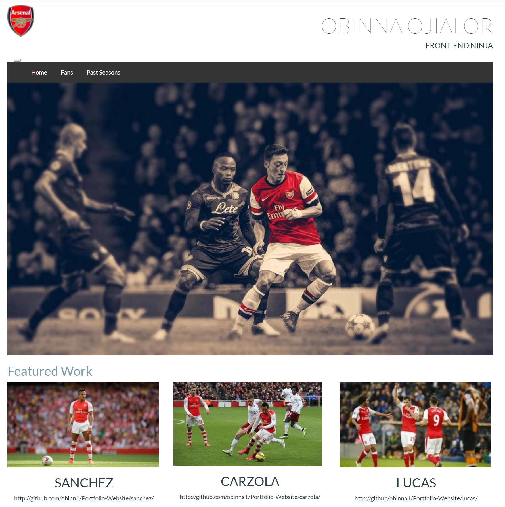

Portfolio website using mock pdf
Udacity Full Stack Web Developer
This project will display a simple website with 4 quality images, a title and logo. Bootstrap was incorporated into the project for better grid system and layout. I used intellij to write the codes in html and css. In order to run this project, download the zip and extract to any directory of your choice. Ensure that both bootstrap.min.css and bootstrap.min.js are in the css folder and js folder respectively. Wihtout these files you won't acheive the desired look of the website.
Either download a html code editor like sublime or intellij, import the project and run the program, or you can simply click the index.html file after you have extracted it to your chosen directory
- Boostrap
- CSS
- Responsive Design